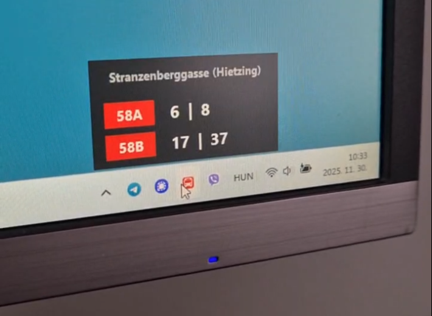
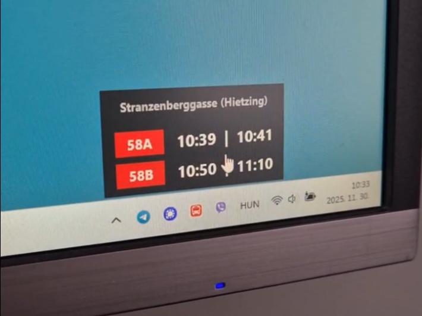

Desktop-Widget zur Echtzeit-Überwachung des Wiener Nahverkehrs
Problemstellung & Ziel
Viele nutzen regelmäßig dieselben Haltestellen und müssen für die nächste Abfahrtszeit entweder eine App öffnen oder eine Website aufrufen. Wien-Ticker löst dieses Problem, indem die relevanten Echtzeit-Abfahrten der Wiener Linien dauerhaft in einem kompakten Desktop-Widget angezeigt werden und somit jederzeit auf einen Blick verfügbar sind.
Zielsetzung
"Bereitstellung einer einfachen Desktop-Anwendung zur kontinuierlichen Anzeige personalisierter Echtzeit-Abfahrtsinformationen der Wiener Linien."
Lösungsansatz & Workflow
Entwicklung einer schlanken Desktop-Anwendung zur Anzeige von Echtzeit-Abfahrtsinformationen der Wiener Linien. Die Python-basierte Lösung greift über die Open-Data-Schnittstelle der Wiener Linien auf aktuelle Verkehrsdaten zu und stellt diese in einem permanent verfügbaren Desktop-Widget dar.
Nutzer:innen können individuelle Haltestellen und Linien konfigurieren, sodass nur die für sie relevanten Verbindungen angezeigt werden. Besonderes Augenmerk lag auf einer einfachen Bedienung, robuster Fehlerbehandlung und einer ressourcenschonenden Ausführung im Hintergrund.
Entstanden ist ein Working Prototyp mit Basisfunktionen und bewusst
reduziertem UI/UX-Fokus. Details im Public GitHub Repository.
Technologien & Stack
Key Learnings
Datenaufbereitung
Öffentliche APIs liefern selten Daten in einer Form, die unmittelbar für Endanwender geeignet ist. Ein wesentlicher Teil der Arbeit bestand in der Aufbereitung, Filterung und nutzerfreundlichen Darstellung der Daten.
Vibe-Coding
Die Entwicklung mit KI-gestützten Coding-Tools (hier OpenAI) beschleunigt die Umsetzung erheblich, erfordert aber weiterhin menschliche Kontrolle bei Architekturentscheidungen, Debugging und Qualitätssicherung.
Benutzerfreundlichkeit
Benutzerfreundlichkeit entsteht oft durch viele kleine Details. Funktionen wie Stationssuche, Linienfilter, automatische Aktualisierung, System-Tray-Integration und UX/UI haben einen größeren Einfluss auf den praktischen Nutzen als die eigentliche Datenabfrage.
Architektur
Bereits einfache Prototypen profitieren von einer modularen Architektur, da Erweiterungen und Wartung dadurch deutlich erleichtert werden. Erst recht bei Vibe-Coding!
Screenshots & Interface


Erweiterungsoptionen & Überlegungen
Caching
Lokales Caching zur Reduktion von API-Anfragen.
Installer
Packaging und Installer für Windows.
Notifications
Individuelle Benachrichtigungen bei Verspätungen oder Betriebsstörungen.
Weitere Verkehrsmittel
Integration weiterer Verkehrsmittel (ÖBB, Badner Bahn, Sharing-Angebote, usw.).